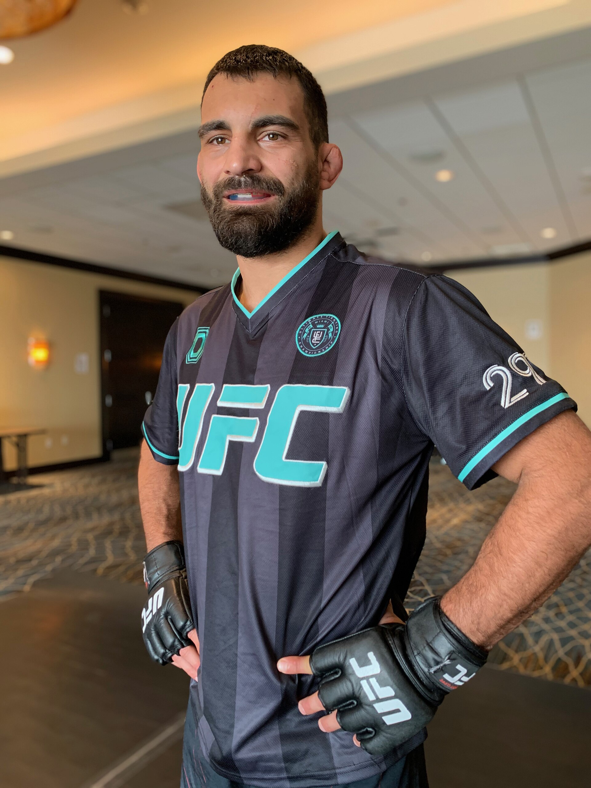
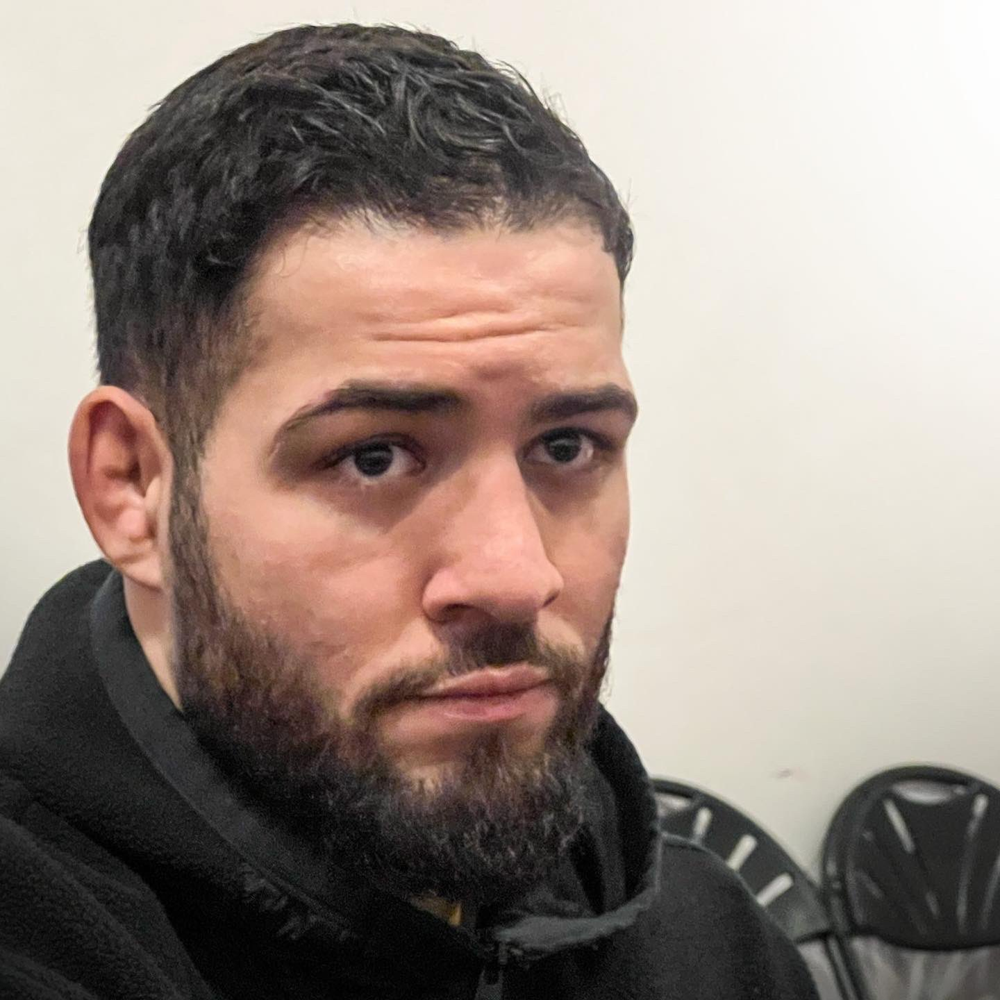

Accueil · UFC Paris 2026 · Historique
L’UFC à Paris : quatre éditions, un rendez-vous de rentrée

Avant le samedi 5 septembre 2026 et une cinquième Fight Night à l’Accor Arena, il est utile de replacer Paris dans l’histoire récente de l’UFC en France. Quatre soirées se sont déjà tenues à Bercy depuis 2022 ; elles coïncident avec la montée en puissance du MMA hexagonal après la légalisation professionnelle.
Pour l’édition à venir : présentation UFC Paris 2026 · carte 2026.
2020 : le MMA professionnel légalisé en France
Le décret du 30 juin 2020 encadre la pratique professionnelle du MMA en France, avec homologation via la FMMAF et des règles sanitaires strictes. Ce cadre ouvre la voie à des galas nationaux structurés (ARES, Hexagone, etc.) et rassure les promoteurs internationaux. L’UFC, qui avait déjà tenté de s’implanter avant l’interdiction, revient avec un ancrage parisien durable une fois le sport reconnu.
Le public français découvre alors l’octogone à grande échelle sans quitter le pays — un facteur clé pour la popularité de Ciryl Gane, Benoît Saint-Denis, Nassourdine Imavov et, plus tard, la vague Parnasse / Ziam / Charrière.
3 septembre 2022 — UFC Paris 1 : Gane vs Tuivasa

Première carte à l’Accor Arena après la relégislation. Ciryl Gane, star montante des poids lourds, headliner contre le Australien Tai Tuivasa, frappeur spectaculaire. Gane l’emporte par knockout au 3e round, devant une salle comblée (environ 15 405 spectateurs selon les chiffres communiqués à l’époque).
Cette soirée fixe le ton : Paris peut vendre du premium MMA, Gane est une figure médiatique nationale, et Bercy devient un slot récurrent en début de saison sportive.
2 septembre 2023 — UFC Paris 2 : Gane vs Spivac
Un an plus tard, Gane retrouve l’Accor Arena, cette fois contre le Moldave Serghei Spivac, spécialiste du grappling lourd. Le Français domine et s’impose par TKO au 2e round. Affluence légèrement supérieure à 2022 (autour de 15 610 personnes dans les communications officielles).
L’édition confirme la fidélité du public et la capacité de Gane à porter un événement domestique, même après sa défaite title contre Ngannou et ses ajustements de carrière.
28 septembre 2024 — UFC Paris 3 : Saint-Denis vs Moicano

Le main event change de génération : Benoît Saint-Denis (« God of War ») affronte le Brésilien expérimenté Renato Moicano en poids légers. Moicano surprend en imposant un TKO au 2e round — claque pour le Français, qui paye peut-être l’agressivité et la gestion du tempo face à un adversaire plus froid en cage.
Leçon pour le public : headliner tricolore oui, mais l’UFC à Paris n’offre pas de script national garanti. BSD rebondira ailleurs ; l’édition reste marquante par son basculement imprévu.
6 septembre 2025 — UFC Paris 4 : Imavov vs Borralho

En 2025, c’est le duel franco-brésilien Nassourdine Imavov vs Caio Borralho en poids moyens qui ferme la soirée. Imavov remporte un décision unanime sur 5 rounds, performance de volume et de gestion, dans un main event exigeant physiquement.
Cette carte consacre Imavov comme tête de pont française dans une division relevée, et montre que Paris peut aussi vendre des headliners « chess match » plutôt que seulement des KO spectaculaires.
Ce que Paris 2026 hérite de ce passé
- Un créneau calendaire de rentrée (fin août / début septembre) désormais attendu.
- Une salle qui remplit vite quand la carte parle au public local.
- Une alternance de figures : Gane (lourds), BSD (légers), Imavov (moyens), Parnasse (légers, débuts UFC) en 2026.
- La leçon 2024 : un main event français ne présage pas d’une victoire française.
La carte 2026 multiplie les combattants tricolores au-delà du seul headliner — évolution logique d’un écosystème qui mature.
Liens utiles
Organisations MMA · Champions actuels · ARES 42 (circuit français) · Hub Paris 2026